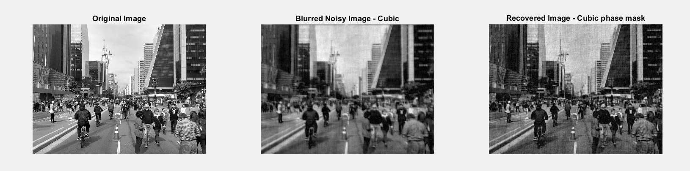

Justification
As part of the MOSAIC project, I contributed to the simulation and image processing tasks by implementing and testing the deconvolution pipeline used to evaluate the performance of the phase masks.
My main responsibility was to develop the MATLAB code that simulates image formation based on the Point Spread Functions (PSFs) generated by our optical system in Zemax. This simulation involved applying a selected PSF to a reference image, adding Gaussian noise, and performing Wiener filtering to recover the degraded image.
Through this work, I gained hands-on experience with image degradation and restoration techniques, and contributed directly to validating the impact of our optical design on final image quality.
Proofs

